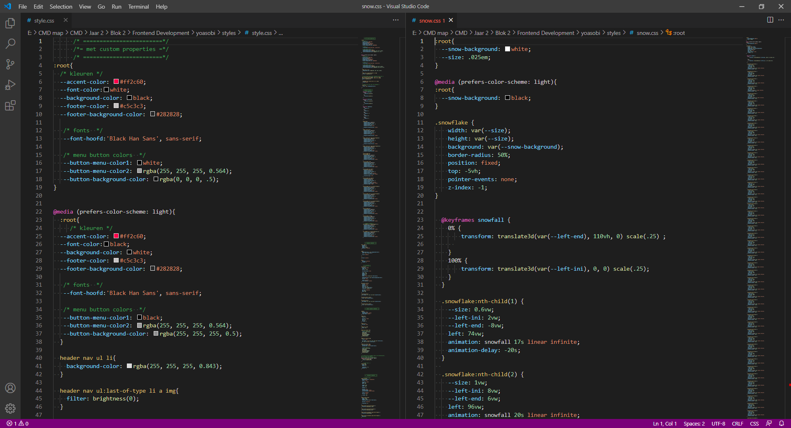

Website copy
Dit project was onder het titel Frontend development. We moesten een website kiezen en dan twee pagina's van hem kiezen, die moesten coderen met een goed, schoon en duidelijk code.
Waar ik trots op ben in mijn werk:
- Anatomie van de pagina's
Ik moet eerst mijn eerste pagina studeren met een oog van een developer, wat is de verdeling van mijn pagina? wat is het inhoud? en waar is mijn header,main en footer? Dan kan ik verder gaan met mijn werk aan het code met een duidlijk plan. Heb ik van mijn site het PROFILE pagina en SONGS/NOVELS pagina gekozen.
- Mijn website bouwen
In mijn eerste pagina heb ik per verkeerd met het desktop versie begonnen in plaats van de mobile versie,
maar van een andere kant was het goed om te leren, hoe ik van grote scherm naar de kleine gaan kan.
Mijn eerste scherm is de basis van mijn website dus ik heb gewerkt om mijn code zo goed mogelijk maken,
dan de rest van de site kan makkelijker worden.
In mijn tweede pagina ik heb met de mobiel versie begonnen, want we moeten altijd met de kleiner schermen beginnen, waarom?
Want de meeste gebruikers beginnen met zijn mobiel aan het gebruiken van een website of app, het is makkelijk, snneller en altijd aan de hand.
- Light mode
Want de originele site heeft een donker achtergrond, heb ik een light mode gemaakt in mijn versie. Ik moest mijn achtergrond, font, sneeuwe effect en foto's kleuren veranderen en soms een filter gebruiken om mijn foto's kleuren veranderen.
- laatste punten
Door dit project heb ik geleerd meer over de frontend development, animaties, dark/light mode
de flexbox, de grid en de coderen van verschillende schermen.
Het was leuk om een versie te maken van deze website, waar heb ik de code van hem verbeteert,
want de orginelle code was echt onduidlijk en de html werkt met div voor alles,
dus kon ik bijna niets leren of kopieren. Ik heb ook geleerd over de animatie tijdens het scrollen,
dat was echt een mooi Javascript en css trick.
Note: De scherm size van het mobiel is iPhone 6/7/8 plus.